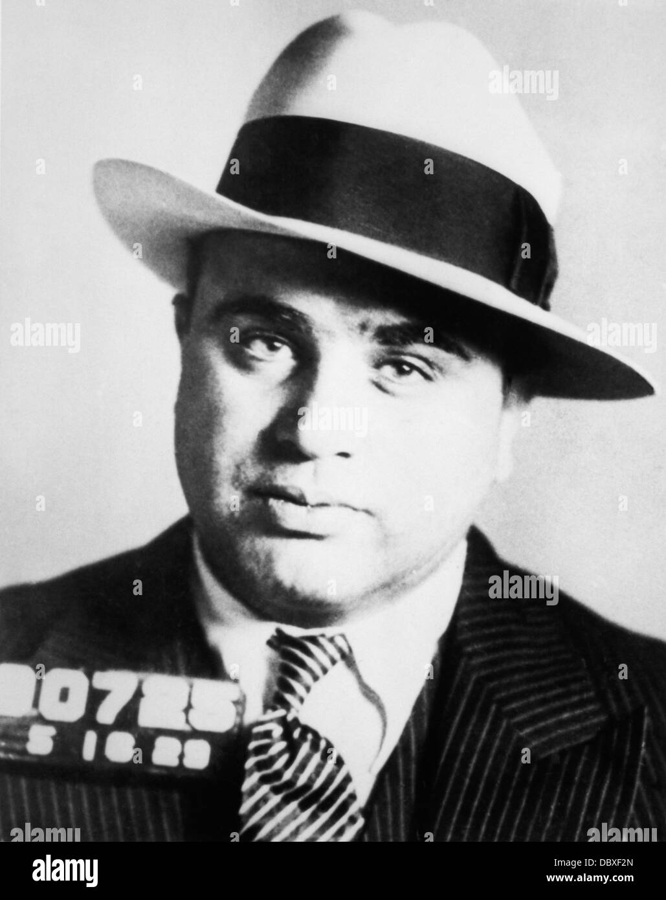
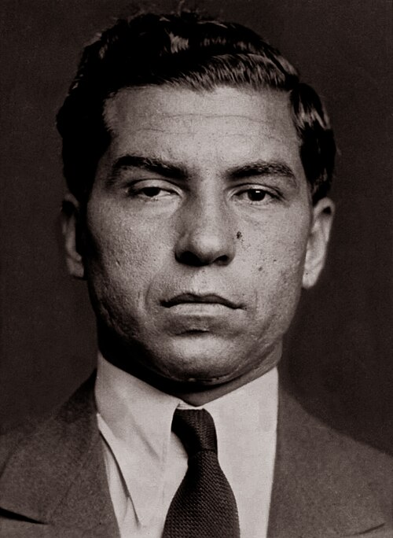

The Quiet Empire
The Mafia didn’t just run New York City — it seeped into the backroads, border towns, and forgotten corners of Broome County, Tioga County, and the Pennsylvania line. Deals were made in diners, money moved through mom‑and‑pop shops, and the real power lived behind closed doors.
This page explores the men who built the empire, the towns that hid it, and the events that exposed it — including the infamous Apalachin Meeting that blew the lid off organized crime in America.
The Men Behind the Myth




The Apalachin Meeting
On November 14, 1957, more than 100 mob bosses, underbosses, and capos gathered at Joe Barbara’s estate in Apalachin, NY. It was supposed to be a quiet meeting — a check‑in, a restructuring, a show of unity.
Instead, it became the biggest Mafia screw‑up in American history.
State troopers noticed the expensive cars, the out‑of‑state plates, the nervous men in suits. When they moved in, the mob scattered into the woods like deer. The arrests and identifications that followed proved — for the first time — that the Mafia was real, organized, and nationwide.
Broome County & The Border Towns
The Mafia didn’t just operate in big cities. Broome County, Tioga County, and the PA border towns were perfect for:
- Quiet meetings
- Money laundering through small businesses
- Unregistered vehicles and backroad travel
- Safe houses and stash locations
- Cross‑state movement without attention
These towns weren’t random — they were strategic. And their shadows still hold stories.